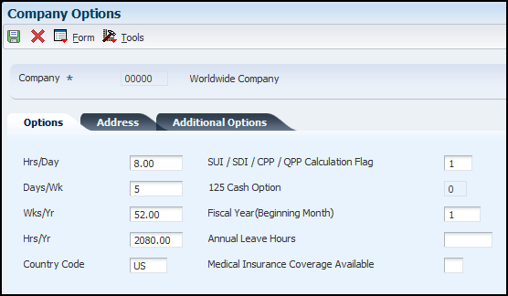

Company Options (P05001C) are setup to standardize operations for a company/companies. This document discusses the options and their effect on operations/transactions.
Scope
This document is intended for EnterpriseOne users who are setting up the Human Resources and/or Payroll modules for use by their organization.
Details
Company Options (P05001C) Overview
You set up company options to define default information that applies to all of the companies within your organization, and to define additional information that is specific to individual companies within your organization. Typically, you first set up options for the default company, company zero. You can also set up company options for each company within your organization. If you do not set up company options for a company within your organization, the system uses the default company options when processing information for that company.
If you set up company options for each company within your organization, you can override some of the default company options. For example, you can enter standard hours per year for a particular company that vary from the standard hours per year that you entered for the default company. Some of the default company options apply to all of the companies within your organization, and cannot be overridden at the individual company level. For example, if you signify that you are not using accounts payable integration or step progression processing at the default company level, none of the companies within your organization can use these options. However, if the default company options are set to activate these options, it is not necessary for all companies in your organization to use them. For example, if you have only one company within your organization that processes step progression information, you must set the default company options to allow step progression processing and then override that setting for all companies except the one company that processes step progression information.
You also set up company options to control payroll processing for the employees of each company. For example, you define this information at the default company level:
How the system retrieves the payroll deduction, benefit, and accrual (PDBA) history.
Whether the system overrides home company information on timecards.
Whether each company and business unit use the same debit account for automatic deposit processing.
How the system determines payment dates during payroll processing.
You must set up company options for the default company before you can process payroll or account for labor.
Note: If you use the JD Edwards EnterpriseOne General Accounting system, you must set up separate company options for that system.
Prerequisite: Verify that the companies within your organization are set up in the JD Edwards EnterpriseOne General Accounting system. Typically, the Accounting Department is responsible for setting up companies.
Understanding Company Options
From Work with Company Options (P05001C), select company 00000. Options tab is displayed.

Options Tab
Company - A code that identifies a specific organization, fund, or other reporting entity. The company code must already exist in the Company Constants table (F0010), and it must identify a reporting entity that has a complete balance sheet. At this level, you can have intercompany transactions.
Note: Company 00000 is used for default values such as dates and automatic accounting instructions. You cannot use company 00000 for transaction entries.
Hrs/Day - A value that indicates the number of hours in a standard working day. This information may be used for automatic overtime computations and other scheduling purposes.
Days/Wk - Enter the number of days in the work week. This number may be used (among other information) in the computation of automatic overtime.
Wks/Yr - Enter the number of work weeks in the year. The number of bi-weekly, semi-monthly, and monthly periods in the year is assumed to be 26, 24, and 12, respectively.
Hrs/Yr - Enter the number of work hours in the year. When you do not set the payroll company constants to use the Pay Grade Step table as the pay-rate source, the system uses this number to compute the hourly rate when you supply the annual salary (or to compute the annual salary when you supply the hourly rate). When you set the constants to use the Pay Grade Step table as the pay rate source, the system uses this sequence to search for the standard number of hours that it uses to calculate the salary or hourly rate per pay period:
Employee entry forms
Pay Grade Step table (hours per day multiplied by days per year)
Payroll company constants for the employee's company
Payroll company constants for the default company (company 00000)
Data dictionary
System default value of 2080 standard hours per year
Country Code - A code from user-defined code (UDC) table 00/CN to indicate the country in which the company resides.
SUI / SDI / CPP / QPP Calculation Flag - A value that determines how the system adjusts State Unemployment Insurance, State Disability Insurance, the Canadian Pension Plan, or the Quebec Pension Plan. Vertex can self-adjust the amount of tax calculated. Values are:
0: Self-adjust. This method always increases the tax to what it should be. The formula used is: Current period tax = (YTD gross + current gross) × SUI, SDI, CPP,or QPP rate - YTD SUI, SDI, CPP, or QPP tax.
1: Do not self-adjust. The tax is calculated only on the current period wages.
2: Self-adjust when maximum base is reached.
125 Cash Option - Enter 1 if you have a cash option for your 125 Plan. This value is used for taxation purposes for SUI and SDI. Certain states allow a 125 exemption amount if a cash option is allowed.
Fiscal Year (Beginning Month) - The number of the month in which the payroll fiscal year begins.
Annual Leave Hours - The standard number of hours generated as annual leave during automatic wage processing.
Address Tab
From Work with Company Options (P05001C), select company 00000. Select the Address tab.
Mailing Name - Will default in from Company Names and Numbers (P0010).
City - The city associated with the address.
Address Line 1-4 - The lines of a mailing address for a company.
State - Code from UDC table 00/S to specify the state or province associated with the company address. This code is usually a postal service abbreviation.
County - Enter the name of a county, parish, or other political district that is necessary for the address or for tax purposes. This may also be a county code assigned by Vertex.
Search Code = O (Company)
Additional Options
From Work with Company Options (P05001C), select company 00000. Select the Additional Options Tab.
Pay Cycle Control- A code specifying whether to incorporate execution control into the payroll cycle steps. Valid codes are:
Y: You must set up execution control by version to determine who can execute the steps within the payroll cycle.
N: No execution control. The person who runs the first pre-payroll step must run all steps in the cycle. This value is the default.
Spending Account Control - A code indicating whether to use flexible spending accounts in processing payroll. Valid codes are:
Y: Use flexible spending accounts.
N: Do not use flexible spending accounts. This value is the default.
P/R Register Edit- A code that specifies a type of error. The system always notes errors in the payroll register if the gross pay amount minus the taxes and applicable deductions does not equal net pay. Values are:
Y: Hard error. You must correct the error and run pre-payroll again. This value is the default.
N: Soft error. This error is noted on the payroll register but payroll cycle processing can continue. You must make the necessary corrections after the payroll cycle is complete.
Employee Number Display Mode- A code that specifies the type of employee number displayed on inquiry screens. Values are:
1: Display the eight-digit Address Book number (default).
2: Display the nine-digit Social Security number.
3: Display the eight-digit Additional Employee number preceded by a forward slash (/).
All forms of employee number remain valid.
Enable Multi-currency Functionality- A code that enables multicurrency functions within the JD Edwards EnterpriseOne Human Resources and JD Edwards EnterpriseOne Payroll systems. Values are:
Y or 1: Yes
N or 0: No
Retrieve PDBA History System Flag- An option that identifies how the system retrieves PDBA history during payroll processing. You can set up the system to retrieve employee PDBA history for only the corporate tax ID in which the employee works during the pay period, or you can set up the system to retrieve all PDBA history for an employee, regardless of corporate tax ID. You might choose to set up the system to retrieve PDBA history across all corporate tax IDs if employees in your organization frequently change companies. Retrieving PDBA history across multiple tax IDs allows the system to collect amounts that remain in arrears under one corporate tax ID if the employee moves to a company with a different corporate tax ID. You can also determine how the system retrieves PDBA history at the PDBA level. Values are:
0: Use the information from PDBA setup to determine how the system retrieves PDBA history amounts.
1: Retrieve PDBA history only for the corporate tax ID in which the employee worked during the pay period, ignoring the setting at the PDBA level.
2: Retrieve PDBA history across all corporate tax IDs, ignoring the setting at the PDBA level.
Payment Check Date Flag - An option that determines how the system derives payment dates for interim payments. You can set this option to derive the payment date using the master pay cycles, or you can set this option to override the master pay cycle dates using a system-calculated date. If you choose to override the master pay cycle dates, the system derives the payment date by adding the number of days entered in the Payment Date Offset field on the Interim Header Entry form to the system date. For example, if you use a payment date offset of 4, the system calculates the payment date for all interims entered on Monday as Monday +4, which is Friday. You might use this option if you enter interims continuously throughout a pay period and you want them all to have the same payment date. However, to accomplish this, you must change the payment date offset number daily. Values are:
0: Derive payment date using master pay cycles (default).
1: Derive payment date using system date + payment date offset formula.
G/L Integration- A code that indicates how batches of payroll journals are posted to the general ledger. Values are:
A: Automatic. If batches are in balance and no errors have occurred, the system posts batches automatically during the final update step of the payroll cycle. This value is the default.
M: Manual. Each batch must be posted manually.
N: None. No general ledger interface is available.
T: Time accounting.
A/P Integration- A value to specify the level of integration. A/P Integration is used to set the level of integration between the JD Edwards EnterpriseOne Payroll and JD Edwards EnterpriseOne Accounts Payable systems. Pro-forma vouchers are created during the payroll journal entries step of the payroll cycle. Actual vouchers are created in Accounts Payable during the final update step. For information on this topic see document E1: 07/75A/75Z/77: Set Up and Process A/P VouchersSet Up and Process A/P Vouchers. Values are:
N: No integration.
0: Create vouchers for both DBAs and taxes that were set up with A/P integration.
1: Create vouchers only for DBAs that were set up with A/P integration.
2: Create vouchers only for taxes that were set up with A/P integration.
Step Progression Automation- A code that specifies whether you want the system to process job step progression information during payroll cycle processing or whether you want to process the information as a stand-alone feature outside of the payroll cycle. Be aware that processing job step progression during the payroll cycle might significantly increase pay cycle processing time. This field works in conjunction with the Step Progression Process field on the Company Options form. To process job step progression information, the Step Progression History Update field must be set to 1 or 2. Also, this field is initially populated with the value from the Company Options setup. You can override the value here. However, if you change the value in the Company Options setup, then the system does not change the value in this field. Values are:
Y: Process job step progression information during payroll processing.
N: Process job step progression as a stand-alone feature (default).
Step Progression Process- A code that specifies whether the system updates Step Progression History tables and the level of detail in which the update occurs. Values are:
1: Update using Union, Job Type, and Job Step.
2: Update using Home Business Unit, Union, Job Type, and Job Step.
N: Do not update Step Progression History tables.
If you select 1, you must set up job step progression parameter tables for each union for which you want to process step progression information. If you select 2, you must set up job step progression parameter tables for each business unit and union combination for which you want to process step progression information. If you select 1 or 2, the companies within your organization are not required to process step progression information. However, if you select N, no companies in your organization can process step progression information.
Maximum Deferral Rate - The maximum percentage of pre-tax earnings that an employee is allowed to defer to a 401(k) plan. This rate is used in the 415 Nondiscrimination Test. For example, to enter a rate of 12.75 percent, enter 12.75 in this field.
Timecard Home Company Flag -A code that determines whether the system overrides the value in the Home Company field on employee timecards with the home company from the Employee Master. Values are:
0: Override the Home Company field on the timecard with the home company from the Employee Master table (F060116). This value is the default.
1: Do not override the Home Company field on the timecard with the home company from the Employee Master table (F060116).
If you choose to override the value on the timecard, the system performs the override at different times depending on how the timecard is entered into the system. These examples illustrate when the override would occur if you set this option to 0 and entered a timecard with a home company that is different than the home company in the Employee Master:
If you enter a regular timecard, the system overrides the home company when the timecard is processed in pre-payroll.
If you enter a timecard using the Time Entry Interim Generator, the system overrides the home company when you exit the row in the detail area of the time entry form.
If you enter timecards for interim payments using the Interim Payment Workbench and if the Company field on the Interim Entry form is blank, then the system overrides the home company when you click OK during interim entry.
Note: The system never overrides the home company on timecards that are entered using the Interim Entry form if a value appears in the Company if Different than Home Company field that is also on the Interim Entry form. The Company if Different than Home Company field is intended to be used as an override to this functionality. The system does not consider the value in this field when determining whether to override the home company for the interim payment. Caution: If your organization has multiple home companies with the same corporate tax ID, and those companies use the same bank account for payroll payments, set this option to 0. Setting this option to 1 might cause undesirable results.
Process Employees by Business Unit- A value that specifies how the system processes information. Values are:
1: Process employees by business unit (as set up in Auto Deposit Instructions for Business Units program (P07236)). This option should be used if different auto deposit information per business unit is needed.
0: Process employees as one large group regardless of the business unit they work in. If you enter 0, auto deposit information from business unit 1 is used. You must set up auto deposit information for business unit 1 in the Auto Deposit Instructions for Business Units program (P07236).
Bypass Voids with Special Taxes - Enter 1 if you want to bypass voided payments if those payments contain special taxes. Leave this option blank if you want to process voided payments if those payments contain special taxes.